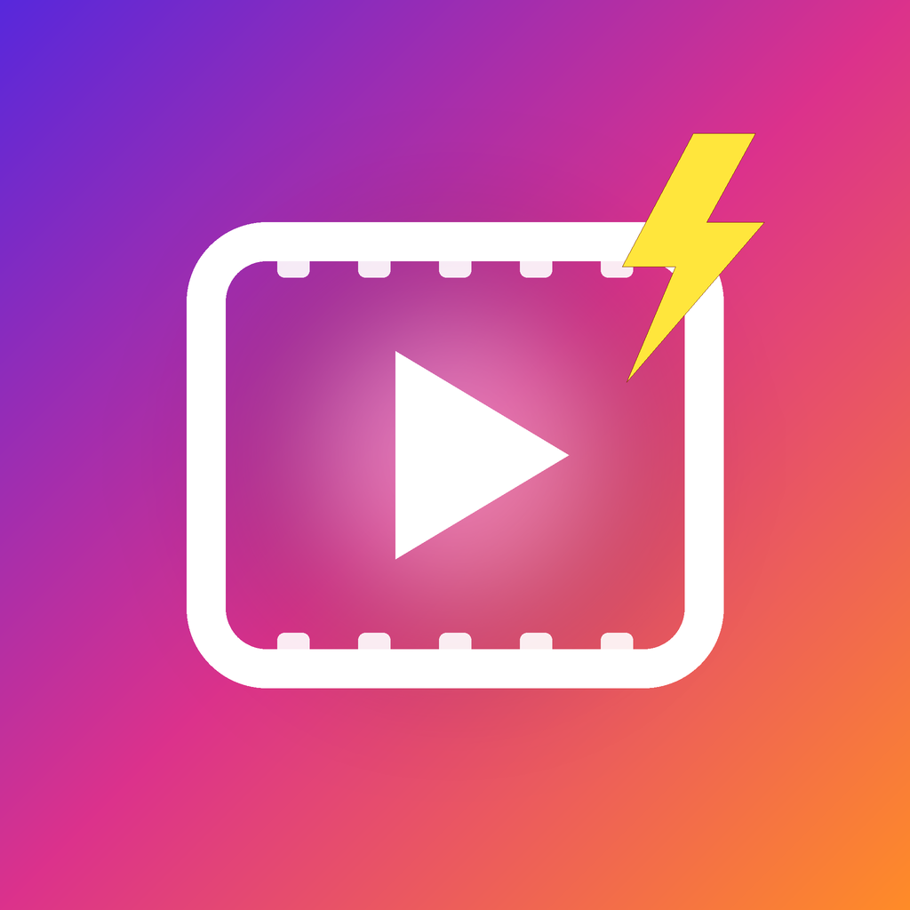

ClipBot ist ein privates Tool, das nur vom Betreiber selbst genutzt wird.
Nach deiner Zustimmung erhält ClipBot ein Zugangs-Token für dein TikTok- bzw. YouTube-Konto sowie Basis-Profilinformationen (Nutzer-ID, Anzeigename). Diese werden ausschließlich lokal auf dem eigenen Computer gespeichert und nur genutzt, um Videos in dein eigenes Konto hochzuladen.
Es werden keine Daten an Dritte weitergegeben oder verkauft. Diese Webseite selbst speichert keine Daten und setzt keine Cookies.
Du kannst den Zugriff jederzeit widerrufen: in TikTok unter „Einstellungen und Datenschutz“ → „Sicherheit“ → „Apps verwalten“, bei Google unter „Google-Konto“ → „Sicherheit“ → „Drittanbieter-Apps“. Die lokal gespeicherten Zugangsdaten werden dadurch ungültig.
Kontakt: DEINE-EMAIL@beispiel.de